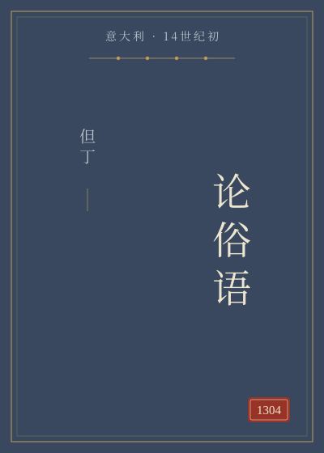
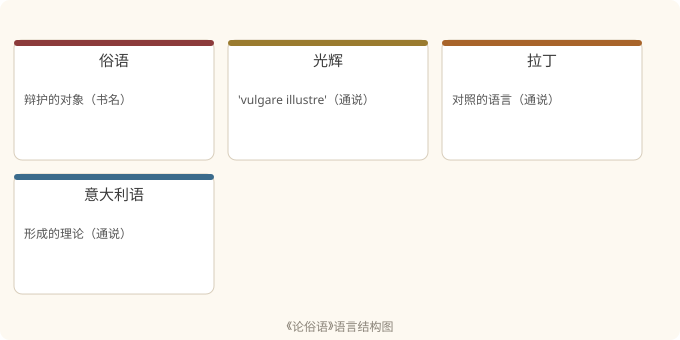

论俗语
一、基本信息
| 作者 | 但丁 |
|---|---|
| 成书/出版 | 作者页注记：Britannica 列举——论俗语（俗语理论——成书年份通说待核——约1303-05说） Dante Alighieri — Encyclopaedia Britannica（百科全书） |
| 国别/地区 | 意大利 |
| 时代 | 古代 · 14世纪初 |
| 体裁 | 语言学论著 |
| 语言 | 拉丁语 |

《论俗语》语言结构图（主题·结构图）
二、创作背景
作者页注记：论俗语——'俗语理论（Britannica 列举）'。
Britannica：但丁——《神曲》以俗语写成（作者页交叉）。
题材（通说待核）：为俗语辩护——'光辉的俗语'（vulgare illustre）的探求。
三、内容脉络
（通说待核）二卷：俗语优于拉丁语与'光辉俗语'的探求。
（通说待核）第二卷（未完成）：诗的俗语用法。
四、主要人物表
| 人物 | 身份 | 说明 |
|---|---|---|
| （论著无人物） | —— | 语言学论著 |
五、主题与艺术特点
- '光辉的俗语'（通说待核）。
- 拉丁语与俗语之辩（B注记语境）。
- 意大利语的形成（通说待核）。
六、影响与评论
- Britannica：'俗语理论'（作者页注记）。
Dante Alighieri — Encyclopaedia Britannica（百科全书） - Britannica：《神曲》的俗语写作（作者页交叉）。
Dante Alighieri — Encyclopaedia Britannica（百科全书）
七、阅读建议
难点
- 中世纪语言学。
- '光辉俗语'的概念。
- 《论俗语》中译本（人民文学等——通说待核）。
- 拉丁文原版（公有领域）。
但丁语言论；与《新生》《帝制论》对读。
八、待核实
- 二卷结构核对（通说）。
- 约1303-05成书年份待核。
- '光辉俗语'细节待核。